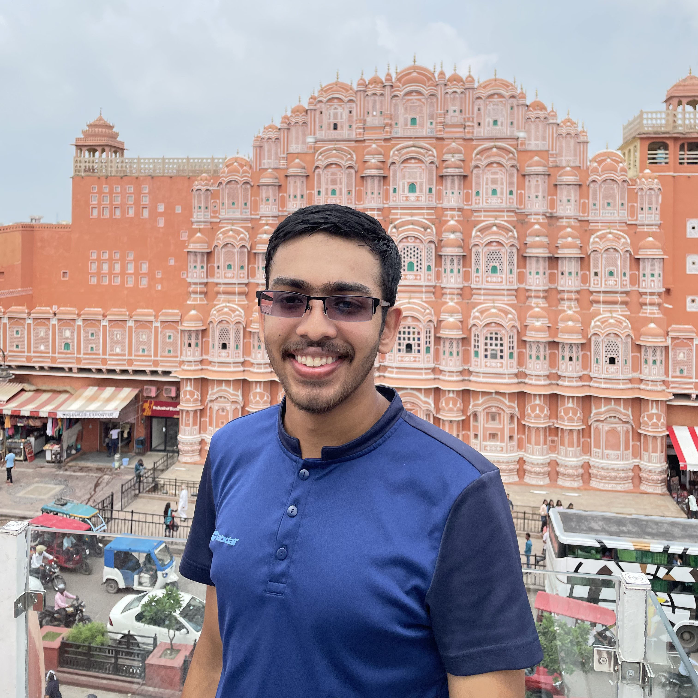

Welcome to the Niskayuna High School Science Bowl Website!
2024 New York Capital Region Winners!
Officers
Mihir Kulkarni

President of Niskayuna Science Bowl. Studies Biology and Chemistry, and hopes to become a surgeon. Notably hates leg day.
Arjun Rangarajan

Creator of this website, Vice President of Niskayuna Science Bowl. Aspiring computer scientist, with a passion for chemistry.
Tarun Jacob

Copresident of Science Bowl. Studies Physics and Astronomy and plans to major in electrical engineering. Enjoys playing and listening to music.
Daniel Yang

I'm Daniel (Da-nile), STEM Secretary at Niskayuna. I like biology, but for legal reasons I'm an ESS main. And I'm a sucker for a good sunrise.
Aarush Iyengar

Avid chess player who hopes to become a National Master. Enjoys biology & physics and hopes to go into medicine. Is fascinated by phage therapy (READ: The Perfect Predator)